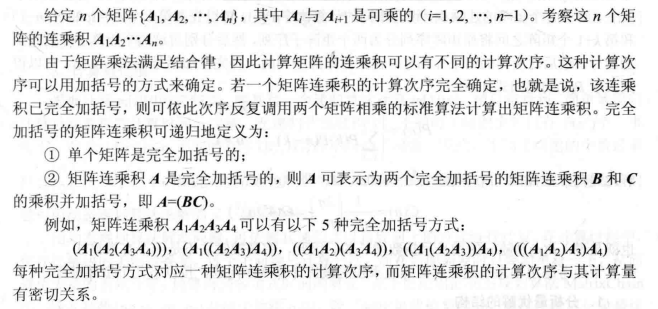
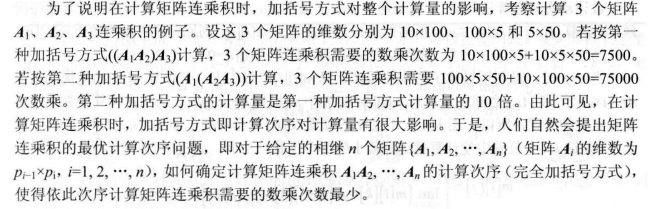
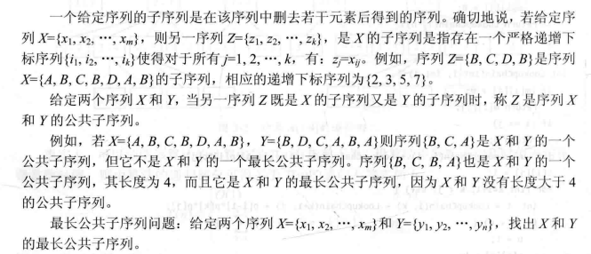
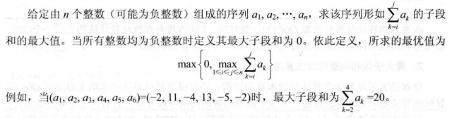
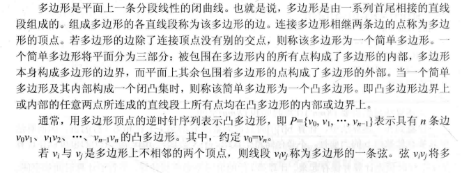
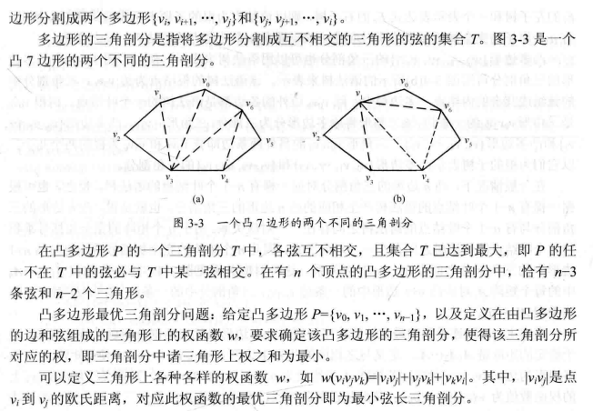
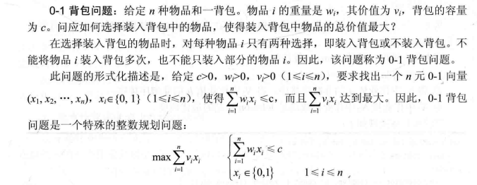
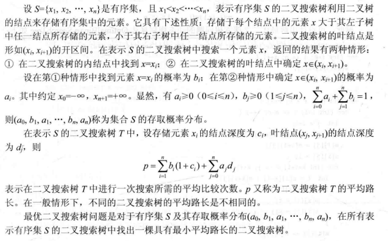

算法分析与设计编程题 动态规划
矩阵连乘
题目描述


解题代码
1 | void printOptimalParens(vector<vector<int>>& partition, int i, int j) { |
最长公共子序列
题目描述

解题代码
1 | void printLCS(const string& text1, vector<vector<char>>& dir, int i, int j) { |
最大子段和
题目描述

解题代码
分治法
1 | int dividedMaxSubSum(vector<int>& nums, int left, int right) { |
动态规划
1 | int maxSubSum(vector<int>& nums) { |
凸多边形最优三角剖分
题目描述


解题代码
1 | int minScoreTriangulation(vector<int>& values) { |
0-1背包问题
题目描述

解题代码
1 | int knapsack01(vector<int>& weights, vector<int>& values, int c) { |
最优二叉搜索树
题目描述

解题代码
1 | // pNonLeaves[i](i >= 1)表示非叶结点i的搜索概率，pLeaves[i](i >= 0)表示叶子结点i的搜索概率 |
本博客所有文章除特别声明外，均采用 CC BY-NC-SA 4.0 许可协议。转载请注明来源 PageFault！
 微信
微信 支付宝
支付宝
相关推荐

2023-09-09
算法分析与设计编程题 回溯法
装载问题题目描述 解题代码递归回溯1234567891011121314151617181920212223242526272829303132333435363738394041424344454647484950// goods[i]表示货物i的重量, c1,c2分别表示货船1和货船2的载重量vector<vector<int>> optimalLoading(vector<int>& goods, int c1, int c2) { int n = goods.size(); // 货物数量 int maxSum = 0; // 当前最大载货量 // curSelection[i]表示货物i是否放入货船1中（true表示放入） vector<bool> curSelection(n, false); // optimSelection记录maxSum对应的货物存放方式 vector<bool> optimSelection; // 递归搜索函数 function<void(int, int)...

2023-09-02
算法分析与设计编程题 贪心算法
活动安排问题题目描述 解题代码12345678910111213141516171819vector<bool> greedySelector(vector<vector<int>>& intervals) { int n = intervals.size(); // 将活动区间按结束时间的从小到大排序 auto cmp = [](vector<int>& interval1, vector<int>& interval2) { return interval1[1] < interval2[1]; }; sort(intervals.begin(), intervals.end(), cmp); vector<bool> res(n, false); // 结束时间最早的活动必定位于某个最优解之中 int minStart = intervals[0][1]; res[0] = ...

2023-08-26
算法分析与设计编程题 递归与分治策略
棋盘覆盖题目描述 解题代码123456789101112131415161718192021222324252627282930313233343536373839404142// para: 棋盘，行偏移，列偏移，特殊行，特殊列void dividedCovering(vector<vector<int>>& chessBoard, int dr, int dc, int sr, int sc, int size) { if (size == 1) return; size /= 2; // 划分为四部分 if (sr < dr + size && sc < dc + size) { // 特殊点位于左上部分 divideCovering(chessBoard, dr, dc, sr, sc, size); } else { int nr = dr + size - 1, nc = dc + size - 1; // 新覆盖点 chessBoard[nr][nc] = 1...

2023-08-04
数据结构编程题 二叉树
二叉树定义以下为本文解题代码的二叉树定义。 123456struct TreeNode { int val; TreeNode* left, *right; TreeNode(int val = 0, TreeNode* left = nullptr, TreeNode* right = nullptr) : val(val), left(left), right(right) {}}; 非递归先序遍历题目描述编写先序遍历二叉树的非递归算法。 解题代码12345678910111213141516void nonRecurPre(TreeNode* root) { if (root == nullptr) return; stack<TreeNode*> s; while (root != nullptr || !s.empty()) { if (root != nullptr) { cout << root->val << " "; s...

2023-01-08
LeetCode周赛总结 第327场
由于考研等因素的影响，已经时隔一年没有参加力扣周赛了，长时间没有好好琢磨算法题，思维敏捷度确实有所下降，好在这次周赛前两题都没有什么难度，但第三题却把简单问题想复杂了，第四题就基本上都没怎么读题了。。。 正整数和负整数的最大计数题目链接正整数和负整数的最大计数 解题思路直接依照题意统计该数组中正整数和负整数的个数，然后返回较大个数即可，送分题。 解题代码123456789101112131415class Solution {public: int maximumCount(vector<int>& nums) { int cnt1 = 0, cnt2 = 0; for (int i = 0; i < nums.size(); ++i) { if (nums[i] > 0) { ++cnt1; } else if (nums[i] < 0) { ...

2023-08-15
数据结构编程题 图
图定义邻接表1234567891011121314struct ArcNode { // 边结点 int verIdx, weight; ArcNode* next; ArcNode(int verIdx, int weight, ArcNode* next) : verIdx(verIdx), weight(weight), next(next) {}};struct VNode { // 顶点结点 char vertex; ArcNode* first;};struct AlGraph { vector<VNode> VNodes;}; 邻接矩阵1234struct MGraph { vector<char> vertices; // 顶点集 vector<vector<int>> edges; // 邻接矩阵}; 邻接表转邻接矩阵题目描述写出从图的邻接表转化为邻接矩阵的算法。 解题代码1234567891011121314151...